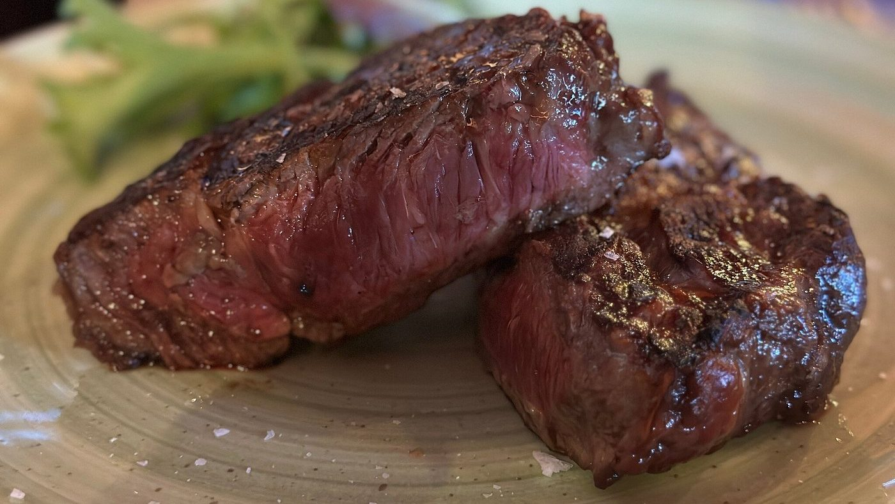

Carne, brace
e birra vera
Steakhouse e birreria artigianale ad Alassio, dal 2015.
La carne si sceglie al banco,
la birra si spilla al momento.
Il banco
La carne la scegli tu,
prima di sederti
Il banco sta all'ingresso, con i tagli in vista e il cartellino su ognuno:
si guarda, si sceglie il pezzo, e da lì va sulla brace. Accanto c'è la cella dove la carne frolla.
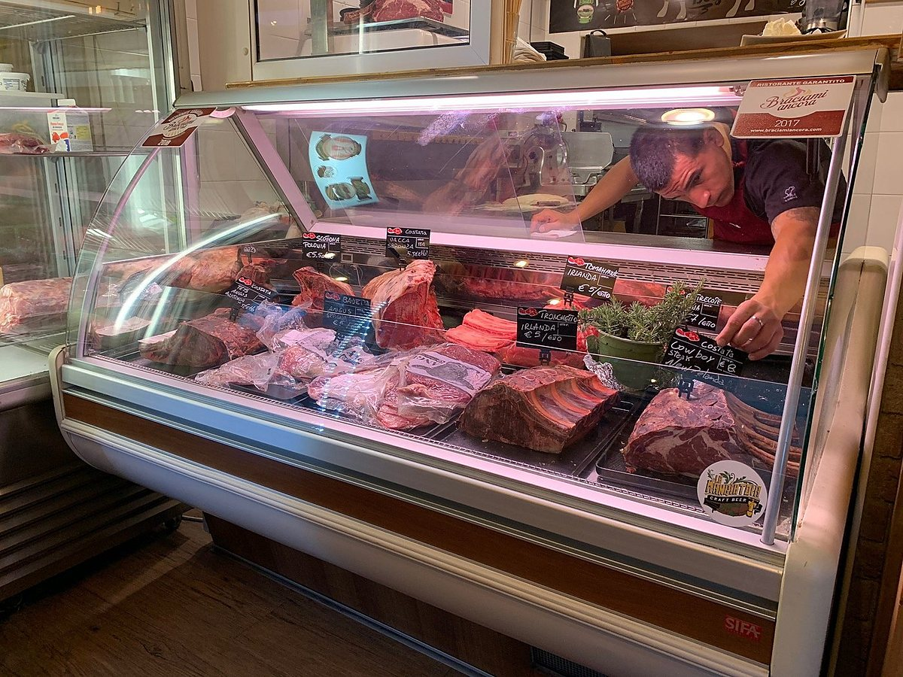
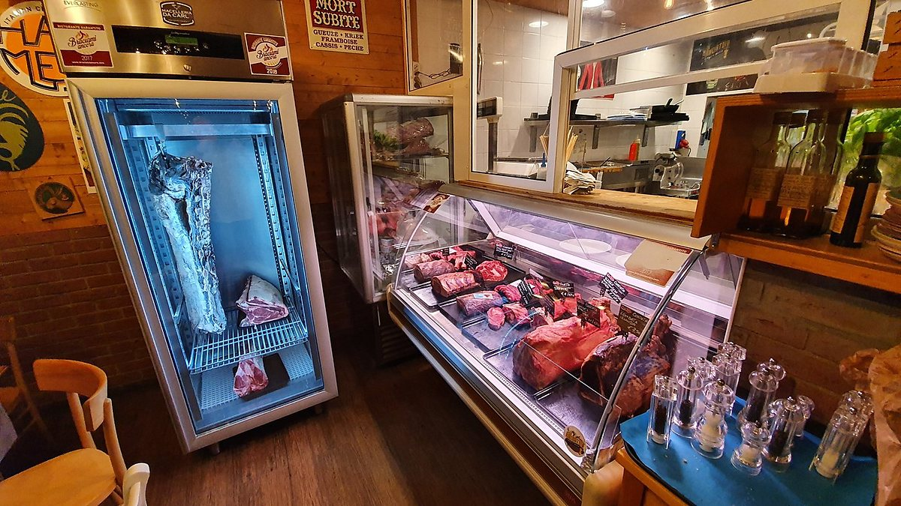
- Si sceglie a vista — il pezzo lo guardi prima, e scegli quello.
- Cottura sulla brace — tagliate, costate, costine, salsicce.
- Hamburger fatti in casa, con le patate fritte.
- Anche stasera — aperti tutti i giorni, dalle 16.00 a 00.00.
In tavola
Quello che esce dalla cucina
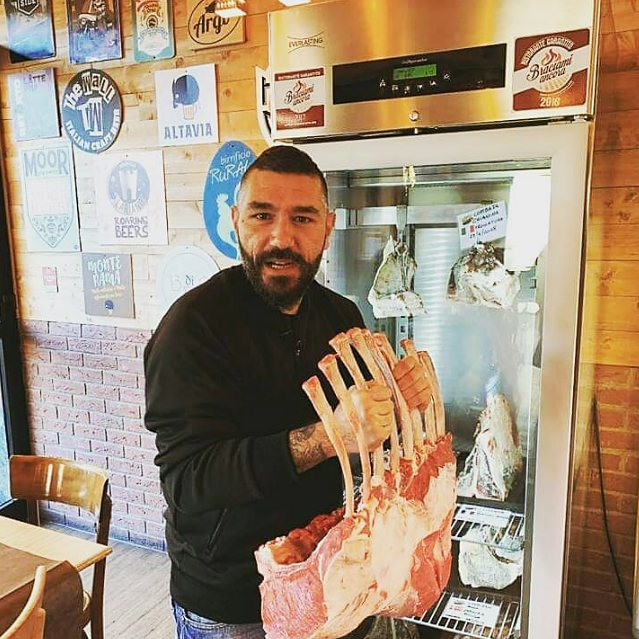
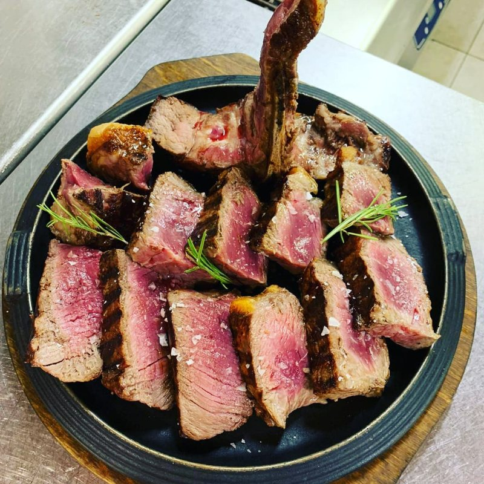
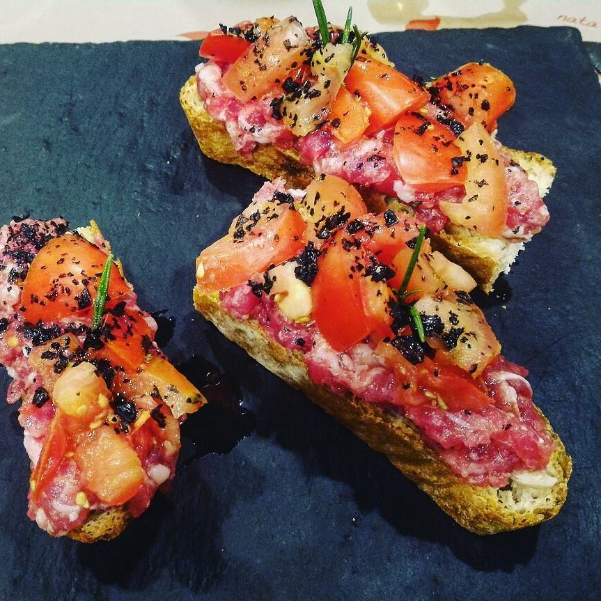
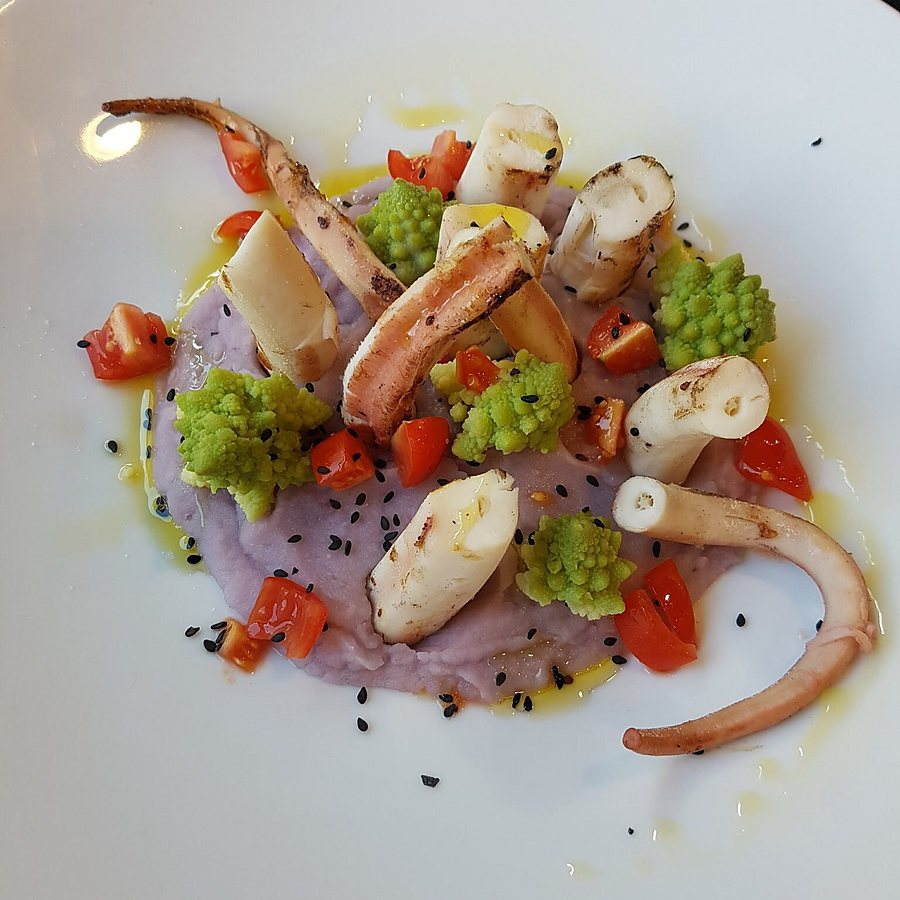
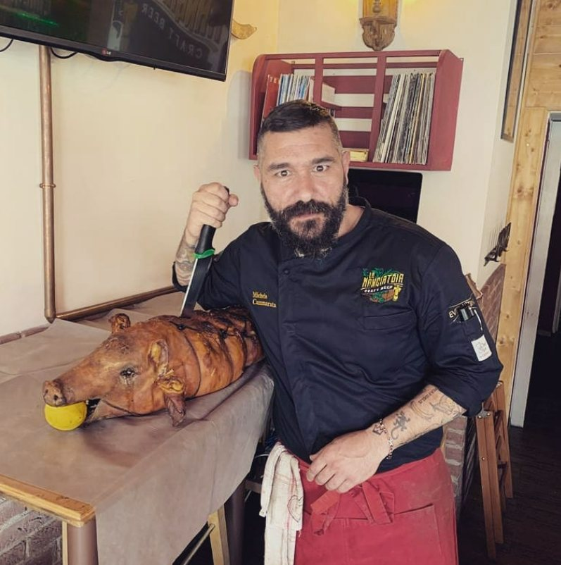
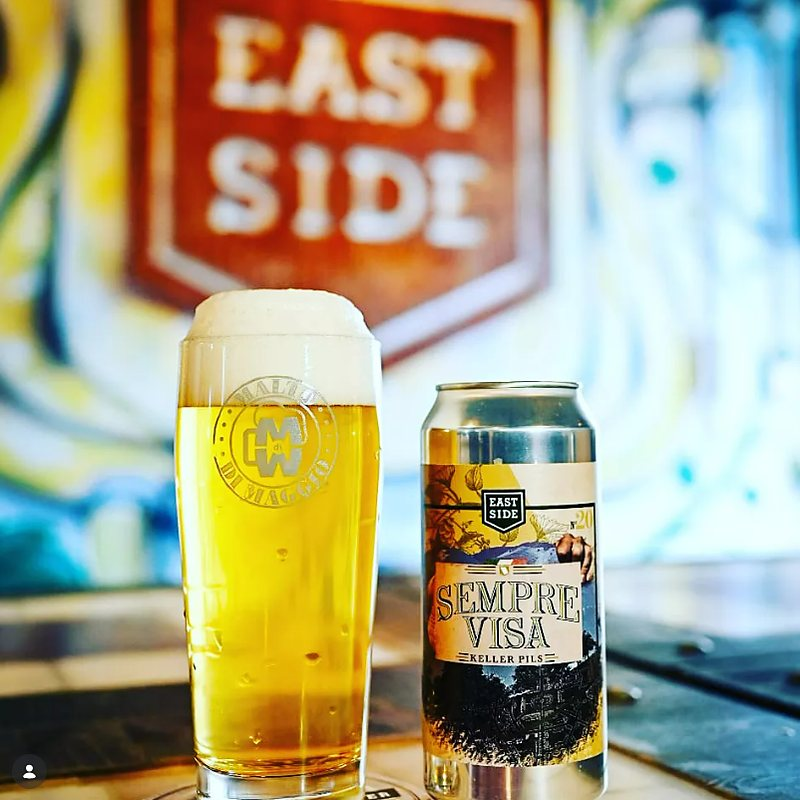
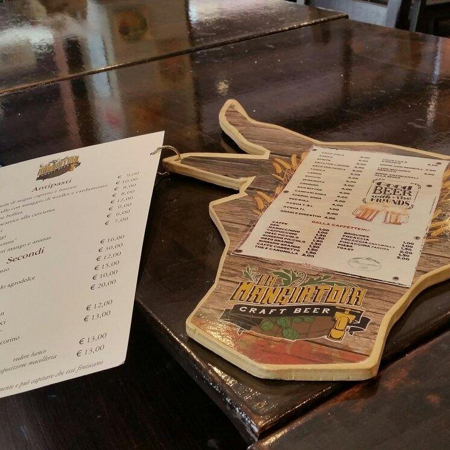
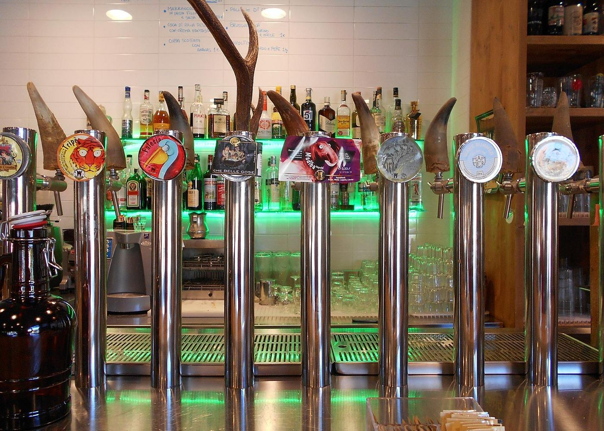
Craft beer
Otto spine
che girano spesso
Otto spine sul bancone e le targhe dei birrifici alla parete. La carta della birra cambia: si chiede cosa c'è stasera.
Il locale
Legno, corna alla parete
e “nice to meat you”
Una sala sola, tavoli vicini, il soffitto rosso e la scritta sopra il bancone.
Si viene per la carne, si resta per la birra, e la partita si guarda insieme.
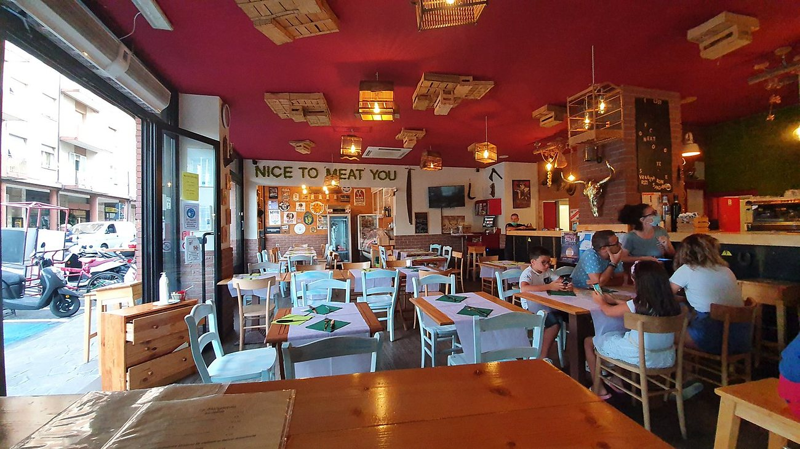
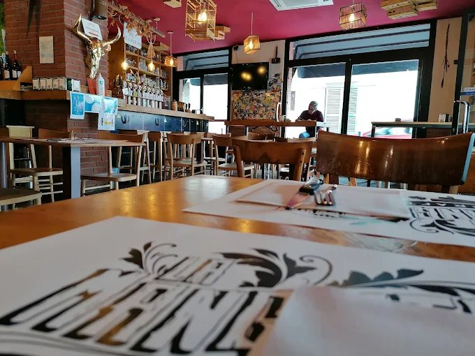
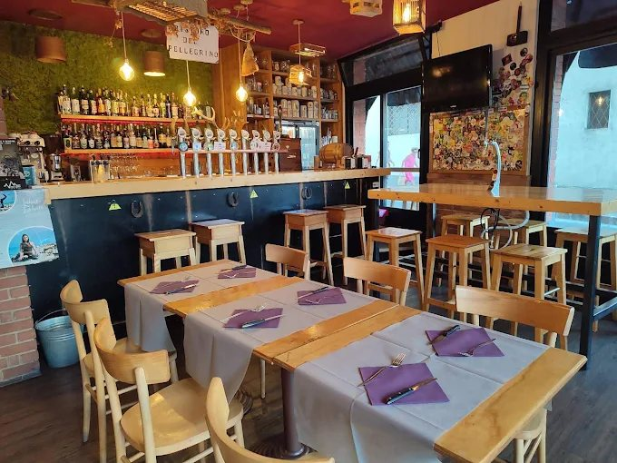
833 recensioni su Google. Il voto è il loro, aggiornato al 20 agosto 2026: si può controllare sulla scheda.
Dove siamo
Vieni a trovarci
| Lunedì | 16 — 00 |
|---|---|
| Martedì | 16 — 00 |
| Mercoledì | 16 — 00 |
| Giovedì | 16 — 00 |
| Venerdì | 16 — 00 |
| Sabato | 16 — 00 |
| Domenica | 16 — 00 |